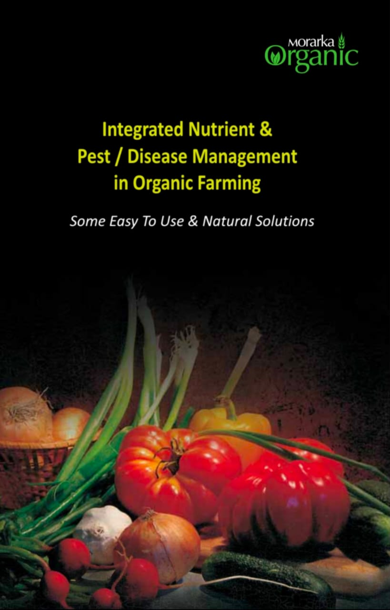
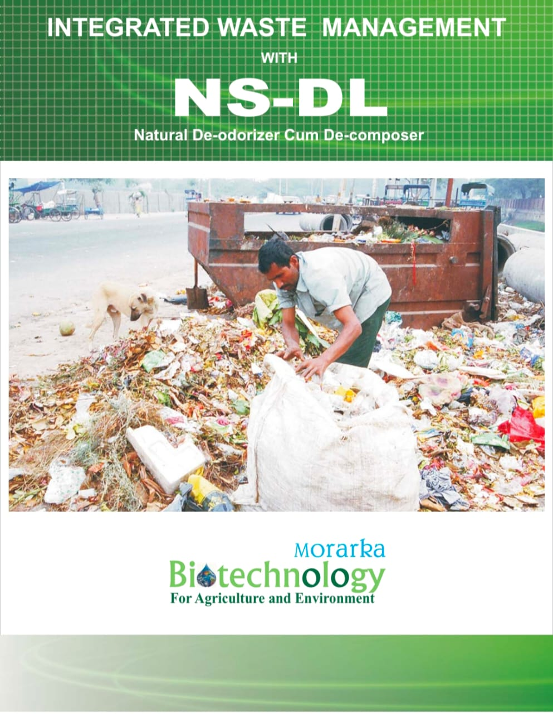
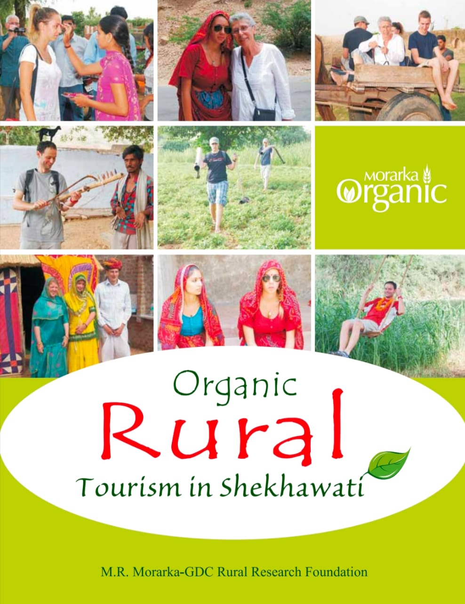

Book Publication
Sharing knowledge and insights on sustainable agriculture, organic practices, and rural development.

Integrated Nutrient & Pest / Disease Management in Organic Farming
Morarka’s book publication initiative promotes awareness and education on organic farming and sustainable agriculture practices.

All India Organic Project
Morarka Foundation’s All India projects focus on promoting organic farming and sustainable agriculture across the country.

INTEGRATED WASTE MANAGEMENT WITH NS-DL
Morarka Foundation has worked for more than Ten Years to develop Biotechnology Applications for Scientific Management and Waste Recycling

Rural Tourism In Shekhawati
Case studies, strategies, and innovations that have transformed rural livelihoods through organic adoption.